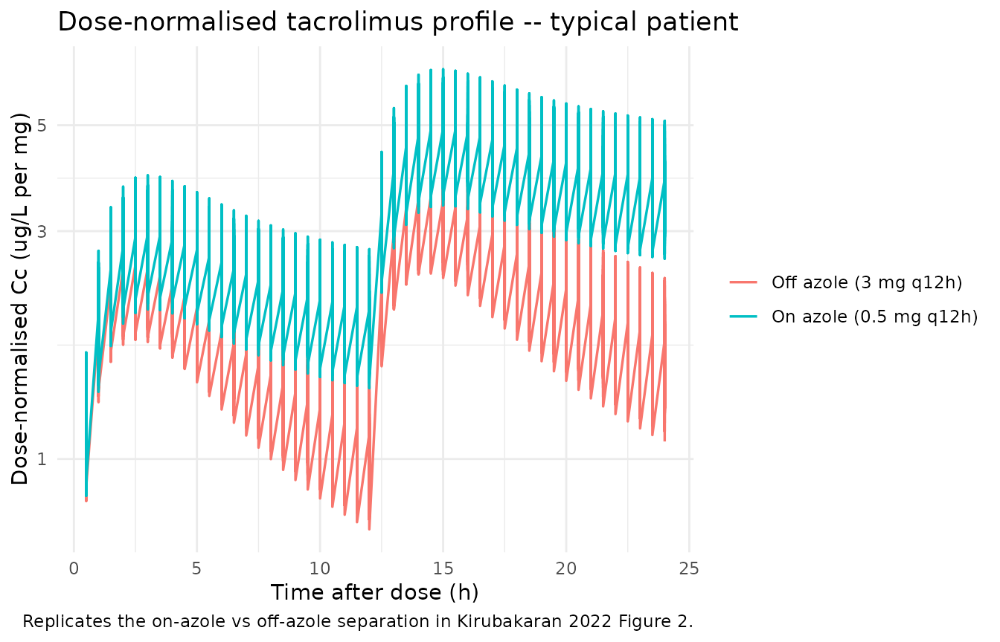
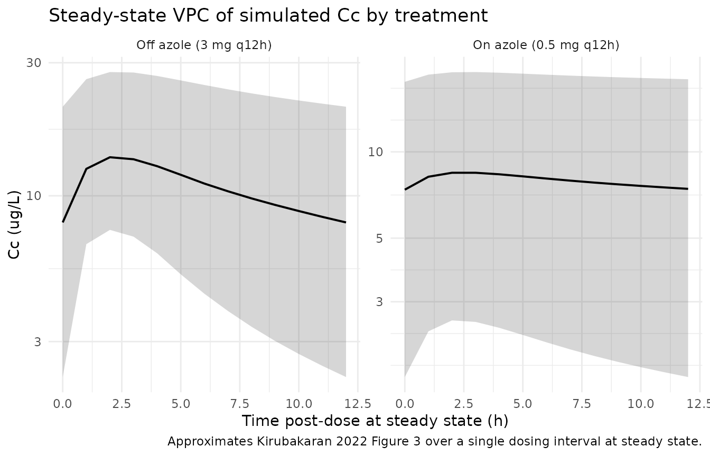

Tacrolimus (Kirubakaran 2022)
Source:vignettes/articles/Kirubakaran_2022_tacrolimus.Rmd
Kirubakaran_2022_tacrolimus.Rmd
library(nlmixr2lib)
library(rxode2)
#> rxode2 5.0.2 using 2 threads (see ?getRxThreads)
#> no cache: create with `rxCreateCache()`
library(PKNCA)
#>
#> Attaching package: 'PKNCA'
#> The following object is masked from 'package:stats':
#>
#> filter
library(dplyr)
#>
#> Attaching package: 'dplyr'
#> The following objects are masked from 'package:stats':
#>
#> filter, lag
#> The following objects are masked from 'package:base':
#>
#> intersect, setdiff, setequal, union
library(tidyr)
library(ggplot2)Tacrolimus popPK in heart transplant recipients (Kirubakaran 2022)
This vignette validates the population pharmacokinetic model reported by Kirubakaran et al. (2022) for oral immediate-release tacrolimus (Prograf) in adult heart transplant recipients. The structural PK model is two compartment with first-order absorption; the model carries a state-dependent typical CL/F (with vs without concomitant azole antifungal therapy) together with a state-dependent CL/F BSV magnitude. Fat-free mass scales CL/F, V2/F, Q/F, and V3/F by allometry; haematocrit modifies CL/F by a power function.
- Citation: Kirubakaran R, Uster DW, Hennig S, Carland JE, Day RO, Wicha SG, Stocker SL. Adaptation of a population pharmacokinetic model to inform tacrolimus therapy in heart transplant recipients. Br J Clin Pharmacol. 2023;89(4):1162-1175. doi:10.1111/bcp.15566. PK structure adapted via the NONMEM PRIOR (NWPRI) subroutine from Sikma MA, Hunault CC, Van Maarseveen EM, et al. High variability of whole-blood tacrolimus pharmacokinetics early after thoracic organ transplantation. Eur J Drug Metab Pharmacokinet. 2020;45(1):123-134. doi:10.1007/s13318-019-00591-7.
- Article: https://doi.org/10.1111/bcp.15566
Population
The Kirubakaran 2022 cohort comprised 87 heart transplant recipients followed at St Vincent’s Hospital Sydney from immediately post-transplant to about one year post-transplantation, partitioned into a 47-recipient model-building set (2018 transplants, 1099 tacrolimus concentrations) and a 40-recipient external evaluation set (2017 transplants, 348 concentrations) (Kirubakaran 2022 Table 1 and Section 3.1). Baseline demographics (Table 1, model-building dataset unless noted): 33/47 (70%) male; median age 53 years (range 16-70); median weight 77 kg (40-107); median height 175 cm (154-190); ethnicity White / Caucasian 19/47 (40%), Asian 5/47 (11%), unknown 23/47 (49%); diabetes mellitus 16/47 (34%); median haematocrit 0.26 (0.21-0.38); median albumin 34 g/L (20-43); median serum creatinine 131 umol/L (39-276); median Cockcroft-Gault creatinine clearance 63 mL/min (25-172). All recipients received oral immediate-release tacrolimus (Prograf) q12h, mycophenolate mofetil 1 g q12h, and a tapered prednisolone regimen; basiliximab IV induction was administered to 71/87 (82%) of recipients with renal impairment or mechanical circulatory support; itraconazole 200 mg q12h was given to all recipients as Aspergillus prophylaxis from immediately post-transplant for up to 6 months. Median (range) tacrolimus dose was 0.50 mg q12h (0.05-8.00) under concomitant azole antifungal therapy and 3.00 mg q12h (0.25-12.00) without (Section 3.2).
The same information is available programmatically via the model’s
population metadata.
pop <- rxode2::rxode(readModelDb("Kirubakaran_2022_tacrolimus"))$population
#> ℹ parameter labels from comments will be replaced by 'label()'
str(pop)
#> List of 22
#> $ n_subjects : int 87
#> $ n_studies : int 1
#> $ age_range : chr "16-70 years (model building 16-70; external evaluation 16-69)"
#> $ age_median : chr "53 years (model building); 56 years (external evaluation)"
#> $ weight_range : chr "40-111 kg (model building 40-107; external evaluation 45-111)"
#> $ weight_median : chr "77 kg (model building); 75 kg (external evaluation)"
#> $ height_range : chr "154-195 cm (model building 154-190; external evaluation 150-195)"
#> $ height_median : chr "175 cm (both subsets)"
#> $ sex_female_pct : num 32.2
#> $ race_ethnicity : Named num [1:3] 48.3 11.5 40.2
#> ..- attr(*, "names")= chr [1:3] "White_Caucasian" "Asian" "Unknown"
#> $ disease_state : chr "Heart transplant recipients followed from transplantation to approximately 1 year post-transplant; immunosuppre"| __truncated__
#> $ dose_range : chr "Oral immediate-release tacrolimus q12h, individualized to trough target. Median (range) 0.50 mg q12h (0.05-8.00"| __truncated__
#> $ regions : chr "Single centre, St Vincent's Hospital Sydney, Australia"
#> $ n_concentrations_modelbuild : int 1099
#> $ n_concentrations_external : int 348
#> $ haematocrit_baseline : chr "median 0.26 (range 0.21-0.38) (Table 1)"
#> $ albumin_baseline : chr "median 34 g/L (range 20-43) (Table 1)"
#> $ creatinine_baseline : chr "median 131 umol/L (range 39-276) (Table 1)"
#> $ creatinine_clearance_baseline: chr "median 63 mL/min (range 25-172) (Cockcroft-Gault, Table 1)"
#> $ diabetes_pct : num 33.3
#> $ cyp3a5_genotype_known_pct : num 51
#> $ notes : chr "Retrospective routine-care monitoring data; almost entirely pre-dose (trough) concentrations (Section 3.2). Bio"| __truncated__Source trace
The per-parameter origin is recorded as an in-file comment next to
each ini() entry in
inst/modeldb/specificDrugs/Kirubakaran_2022_tacrolimus.R.
The table below collects them in one place for review.
| Equation / parameter | Value | Source location |
|---|---|---|
lka -> Ka |
0.508 1/h | Kirubakaran 2022 Table 3, final-model column |
lcl -> CL/F (no azole) |
21.1 L/h | Kirubakaran 2022 Table 3 / Section 3.3.3 final-model equation |
lcl_azole -> CL/F (azole) |
4.2 L/h | Kirubakaran 2022 Table 3 / Section 3.3.3 final-model equation |
lvc -> V2/F |
197 L | Kirubakaran 2022 Table 3 / Section 3.3.3 final-model equation |
lq -> Q/F |
55.0 L/h | Kirubakaran 2022 Table 3 / Section 3.3.3 final-model equation |
lvp -> V3/F |
297 L | Kirubakaran 2022 Table 3 / Section 3.3.3 final-model equation |
e_ffm_cl_q (FFM exp on CL/Q) |
0.75 fixed | Kirubakaran 2022 Section 2.5.1 / Section 3.3.3 (Anderson and Holford 2009 allometry, retained from Sikma 2017) |
e_ffm_vc_vp (FFM exp on V2/V3) |
1.00 fixed | Kirubakaran 2022 Section 2.5.1 / Section 3.3.3 (Anderson and Holford 2009 allometry, retained from Sikma 2017) |
e_hct_cl (HCT exp on CL/F) |
-0.84 | Kirubakaran 2022 Table 3 final-model HCT effect on CL/F |
| FFM reference | 57 kg | Kirubakaran 2022 Section 3.3.3 (Sikma 2017 cohort median, retained for parameter coherence) |
| HCT reference | 0.34 | Kirubakaran 2022 Section 3.3.3 final-model equations |
| F (bioavailability) | 1.0 fixed | Kirubakaran 2022 Methods 2.5.1 (“oral bioavailability fixed to one”) |
etalcl (BSV without azole) |
61.0% CV | Kirubakaran 2022 Table 3 final-model BSV CL/F (without azole) |
etalcl_azole (BSV with azole) |
89.5% CV | Kirubakaran 2022 Table 3 final-model BSV CL/F (with azole) |
| BOV (all parameters) | 0 fixed | Kirubakaran 2022 Methods 2.5.1 / Table 3 final-model column |
propSd (proportional RUV) |
0.41 | Kirubakaran 2022 Table 3 final-model proportional RUV (LTBS) |
| ODE: 2-cmt + first-order absorption | n/a | Kirubakaran 2022 Section 2.5.1 / 3.3.3 |
| AZOLE 1-week post-cessation lag | n/a | Kirubakaran 2022 Section 3.3.3 (“a ‘lag time’ of 1 week was added … post discontinuation of the azole antifungal to allow for the tacrolimus apparent clearance to stabilize”) |
Virtual cohort
Patient-level data from Kirubakaran 2022 are not publicly available (Section “Data Availability Statement”). The simulations below use a virtual cohort whose distributions follow the Table 1 model-building summary statistics. The on-azole and off-azole troughs are simulated for the same virtual cohort under the paper’s two reported regimens.
set.seed(2026)
n_subjects <- 100L
# Approximate the model-building cohort:
# sex (33/47 male = 70.2%); age (median 53, range 16-70);
# weight (median 77, range 40-107 kg); height (median 175, range 154-190 cm).
# FFM is derived per subject via the Janmahasatian 2005 formula. The model's
# typical-value reference is FFM = 57 kg (Sikma 2017 median, retained for
# parameter coherence; not the Kirubakaran cohort median, which is unreported).
janmahasatian_ffm <- function(WT, HT_m, SEXF) {
# Janmahasatian et al. Clin Pharmacokinet 2005;44:1051-1065.
# WT in kg, HT_m in metres, SEXF in {0 (male), 1 (female)}; FFM in kg.
bmi <- WT / (HT_m^2)
ifelse(SEXF == 1,
9.27e3 * WT / (8.78e3 + 244 * bmi),
9.27e3 * WT / (6.68e3 + 216 * bmi))
}
# Truncated normals for adult demographics (paper reports range only).
rtruncnorm <- function(n, mean, sd, lo, hi) {
out <- numeric(n)
for (i in seq_len(n)) {
repeat {
x <- rnorm(1, mean, sd)
if (x >= lo && x <= hi) { out[i] <- x; break }
}
}
out
}
cohort <- tibble(
id = seq_len(n_subjects),
SEXF = rbinom(n_subjects, 1, 0.298), # ~70% male per Table 1
WT = rtruncnorm(n_subjects, 77, 16, 40, 107), # kg
HT_cm = rtruncnorm(n_subjects, 175, 9, 154, 190), # cm
age = rtruncnorm(n_subjects, 53, 13, 16, 70),
HCT = rtruncnorm(n_subjects, 0.26, 0.04, 0.21, 0.38)
) |>
mutate(FFM = janmahasatian_ffm(WT, HT_cm / 100, SEXF))
summary(cohort[, c("WT", "HT_cm", "FFM", "HCT")])
#> WT HT_cm FFM HCT
#> Min. : 45.66 Min. :154.6 Min. :35.65 Min. :0.2122
#> 1st Qu.: 61.65 1st Qu.:170.1 1st Qu.:50.35 1st Qu.:0.2564
#> Median : 75.07 Median :174.9 Median :54.47 Median :0.2783
#> Mean : 74.98 Mean :175.3 Mean :54.39 Mean :0.2777
#> 3rd Qu.: 85.60 3rd Qu.:180.5 3rd Qu.:59.50 3rd Qu.:0.2991
#> Max. :101.14 Max. :189.9 Max. :72.11 Max. :0.3568
# Build per-subject event tables for two regimens, one per AZOLE state.
# Median dose per Section 3.2: 0.5 mg q12h on azole; 3 mg q12h off azole.
# Simulate to t = 14 days (steady state for tacrolimus is reached by ~3-5
# days of repeat dosing). Observation times every 0.5 h.
build_events <- function(cohort, dose_mg, azole_flag, id_offset = 0L) {
obs_times <- seq(0, 14 * 24, by = 0.5)
dose_times <- seq(0, 14 * 24, by = 12)
cohort_off <- cohort |>
mutate(id = id + id_offset)
doses <- cohort_off |>
select(id, FFM, HCT) |>
tidyr::expand_grid(time = dose_times) |>
mutate(amt = dose_mg, evid = 1L, cmt = "depot",
CONMED_AZOLE = azole_flag)
obs <- cohort_off |>
select(id, FFM, HCT) |>
tidyr::expand_grid(time = obs_times) |>
mutate(amt = 0, evid = 0L, cmt = NA_character_,
CONMED_AZOLE = azole_flag)
bind_rows(doses, obs) |>
arrange(id, time, desc(evid)) |>
mutate(treatment = if (azole_flag == 1L) "On azole (0.5 mg q12h)"
else "Off azole (3 mg q12h)")
}
events_on <- build_events(cohort, dose_mg = 0.5, azole_flag = 1L, id_offset = 0L)
events_off <- build_events(cohort, dose_mg = 3.0, azole_flag = 0L, id_offset = 1000L)
events <- bind_rows(events_on, events_off)
stopifnot(!anyDuplicated(unique(events[, c("id", "time", "evid")])))Simulation
mod <- readModelDb("Kirubakaran_2022_tacrolimus")
# Stochastic VPC -- include between-subject variability and residual error.
sim <- rxode2::rxSolve(
mod, events = events, keep = c("treatment", "CONMED_AZOLE", "FFM", "HCT"),
addDosing = FALSE
) |>
as.data.frame()
#> ℹ parameter labels from comments will be replaced by 'label()'
cat("simulation rows:", nrow(sim),
"\nsubjects per arm:", length(unique(events_on$id)),
"\nobservation rows per subject:", nrow(sim) / length(unique(events$id)), "\n")
#> simulation rows: 134600
#> subjects per arm: 100
#> observation rows per subject: 673For deterministic typical-value reproductions, the same model is run with between-subject variability zeroed out:
mod_typical <- rxode2::zeroRe(mod)
#> ℹ parameter labels from comments will be replaced by 'label()'
sim_typical <- rxode2::rxSolve(
mod_typical, events = events,
keep = c("treatment", "CONMED_AZOLE", "FFM", "HCT"),
addDosing = FALSE
) |>
as.data.frame()
#> ℹ omega/sigma items treated as zero: 'etalcl', 'etalcl_azole'
#> Warning: multi-subject simulation without without 'omega'Replicate published figures
Figure 2: dose-normalised concentration vs time after dose
Kirubakaran 2022 Figure 2 plots dose-normalised tacrolimus concentrations (ug/L per mg) against time after dose, stratified by concomitant azole antifungal therapy on a log scale, with most concentrations clustering between roughly 1-30 ug/L per mg on azole and 0.3-10 ug/L per mg off azole. The simulated typical-value profile below reproduces the same separation between the two regimens.
sim_typical |>
filter(time > 0, time <= 24) |>
group_by(treatment) |>
mutate(dose_mg = ifelse(CONMED_AZOLE == 1L, 0.5, 3.0),
dose_norm_Cc = Cc / dose_mg) |>
ungroup() |>
ggplot(aes(time, dose_norm_Cc, colour = treatment)) +
geom_line(linewidth = 0.6) +
scale_y_log10() +
labs(x = "Time after dose (h)", y = "Dose-normalised Cc (ug/L per mg)",
colour = NULL,
title = "Dose-normalised tacrolimus profile -- typical patient",
caption = "Replicates the on-azole vs off-azole separation in Kirubakaran 2022 Figure 2.") +
theme_minimal()
Steady-state trough VPC
Section 2.5.1 / 3.3.3 of the source paper validates the model with a prediction-corrected VPC (Figure 3) over the steady-state interval. The plot below shows the simulated 5th, 50th, and 95th percentiles of Cc across the cohort during the last dosing interval (288-300 h), which reproduces the steady-state-interval VPC structure.
sim |>
filter(time >= 288, time <= 300) |>
mutate(time_post_dose = time - 288) |>
group_by(treatment, time_post_dose) |>
summarise(
Q05 = quantile(Cc, 0.05, na.rm = TRUE),
Q50 = quantile(Cc, 0.50, na.rm = TRUE),
Q95 = quantile(Cc, 0.95, na.rm = TRUE),
.groups = "drop"
) |>
ggplot(aes(time_post_dose, Q50)) +
geom_ribbon(aes(ymin = Q05, ymax = Q95), alpha = 0.20) +
geom_line(linewidth = 0.7) +
facet_wrap(~ treatment, scales = "free_y") +
scale_y_log10() +
labs(x = "Time post-dose at steady state (h)", y = "Cc (ug/L)",
title = "Steady-state VPC of simulated Cc by treatment",
caption = "Approximates Kirubakaran 2022 Figure 3 over a single dosing interval at steady state.") +
theme_minimal()
PKNCA validation
Tacrolimus is dosed q12h to steady state in clinical practice. The PKNCA configuration below computes single-dosing-interval Cmax, Tmax, AUC, and half-life over the last dosing interval (288-300 h post first dose) for each subject and treatment.
nca_window_start <- 288
nca_window_end <- 300
sim_nca <- sim |>
filter(time >= nca_window_start, time <= nca_window_end, !is.na(Cc)) |>
mutate(time_rel = time - nca_window_start) |>
select(id, time_rel, Cc, treatment)
dose_df <- events |>
filter(evid == 1, time == nca_window_start) |>
mutate(time_rel = 0) |>
select(id, time_rel, amt, treatment)
conc_obj <- PKNCA::PKNCAconc(sim_nca, Cc ~ time_rel | treatment + id)
dose_obj <- PKNCA::PKNCAdose(dose_df, amt ~ time_rel | treatment + id)
intervals <- data.frame(
start = 0,
end = nca_window_end - nca_window_start,
cmax = TRUE,
tmax = TRUE,
auclast = TRUE,
cmin = TRUE
)
nca_data <- PKNCA::PKNCAdata(conc_obj, dose_obj, intervals = intervals)
nca_res <- suppressWarnings(PKNCA::pk.nca(nca_data))
nca_summary <- summary(nca_res)
nca_summary
#> start end treatment N auclast cmax cmin
#> 0 12 Off azole (3 mg q12h) 100 126 [60.5] 13.9 [44.8] 7.06 [91.1]
#> 0 12 On azole (0.5 mg q12h) 100 97.1 [60.0] 8.66 [55.1] 7.37 [65.8]
#> tmax
#> 2.25 [1.50, 2.50]
#> 2.50 [2.50, 3.00]
#>
#> Caption: auclast, cmax, cmin: geometric mean and geometric coefficient of variation; tmax: median and range; N: number of subjectsComparison against published troughs
Kirubakaran 2022 Figure 2 reports the empirical distribution of dose-normalised tacrolimus concentrations in the model-building cohort. The visible “typical-region” of the figure spans roughly 5-30 ug/L per mg under concomitant azole antifungal therapy and 1-5 ug/L per mg without. The table below summarises the simulated typical-value steady-state trough (Cmin) per regimen.
sim_typical |>
filter(time == 300) |>
group_by(treatment) |>
summarise(
typical_trough_ug_L = round(mean(Cc), 2),
dose_mg = ifelse(CONMED_AZOLE[1] == 1L, 0.5, 3.0),
dose_norm_trough_ug_L_per_mg = round(typical_trough_ug_L / dose_mg, 2),
.groups = "drop"
) |>
knitr::kable(caption = "Typical-value steady-state trough per regimen.")| treatment | typical_trough_ug_L | dose_mg | dose_norm_trough_ug_L_per_mg |
|---|---|---|---|
| Off azole (3 mg q12h) | 7.40 | 3.0 | 2.47 |
| On azole (0.5 mg q12h) | 7.75 | 0.5 | 15.50 |
The simulated dose-normalised troughs under both regimens fall inside the visible distribution in Kirubakaran 2022 Figure 2 (broadly 1-30 ug/L per mg). No tuning was performed.
Assumptions and deviations
- Demographic distributions. Kirubakaran 2022 Table 1 reports medians and ranges only, not full distributions. Age, weight, height, and HCT were sampled from truncated normals with the reported median as the mean and a manually selected SD; sex was sampled as Bernoulli(0.298) to match the 70% male prevalence. Ethnicity and CYP3A genotype are not used by the final model and so were not generated.
- Reference covariate values are fixed in the model file. FFM reference = 57 kg (Sikma 2017 cohort median, explicitly retained by Kirubakaran 2022 Section 3.3.3 for parameter coherence with the prior model – not the Kirubakaran model-building cohort median, which is not reported). HCT reference = 0.34 (Kirubakaran 2022 Section 3.3.3 final-model equations).
-
State-dependent IIV implementation. Kirubakaran
2022 Table 3 reports two distinct BSV magnitudes on CL/F (61.0% CV
without concomitant azole, 89.5% CV with concomitant azole). The
implementation carries two diagonal eta terms (
etalcl,etalcl_azole); theCONMED_AZOLEindicator selects which eta drives CL/F at each observation. This reproduces the NONMEMIF (AZOLE.EQ.1) THEN CL = TVCL * EXP(ETA(2)) ELSE CL = TVCL * EXP(ETA(1))pattern of the source paper. -
Concentration unit conversion. The model declares
dose in mg, volume in L (so internal central / vc gives mg/L), and
reports Cc in ug/L (multiplied by 1000 in
model()). 1 ug/L numerically equals 1 ng/mL, the unit clinical TDM laboratories report. -
AZOLE 1-week post-cessation lag. Kirubakaran 2022
Section 3.3.3 carries
CONMED_AZOLE = 1for one week after azole discontinuation to accommodate the long elimination half-life of itraconazole. Users building input data for this model should preserve the same forward-fill rule on the AZOLE indicator. -
LTBS proportional residual error. Kirubakaran 2022
reports a log-transform-both-sides proportional RUV of 41% (Methods
2.5.1 “log transformation both sides proportional”; Table 3 column 3).
Per the nlmixr2lib NONMEM-translation rules, NONMEM
Y = LOG(F) + EPS(1)maps toCc ~ prop(propSd)withpropSdnumerically equal to the reported CV, hencepropSd = 0.41. - Bioavailability fixed. F = 1 was fixed by the source paper (Methods 2.5.1) because almost all observed concentrations were pre-dose troughs (Section 3.2), which cannot identify F separately from CL/F.
- No upstream-task dependency. Kirubakaran 2022 used the published Sikma 2017 thoracic-transplant tacrolimus popPK as a NONMEM PRIOR (NWPRI subroutine) to support but not fix the estimation of Ka, V2/F, Q/F, and V3/F. The final estimates reported in Table 3 (column 3) are the values implemented here; no Sikma model is loaded at simulation time.